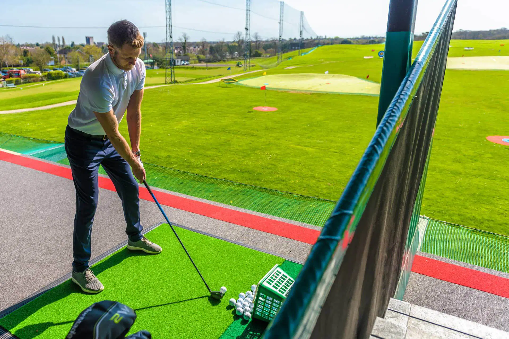

EAT. DRINK. PLAY.
WELCOME TO SIDCUP FAMILY GOLF!
Sidcup Family Golf is a multipurpose golf facility located in Sidcup, South East London. Passionate about technology, player development and making golf fun and accessible to everyone.
TOPTRACER RANGE
GOLF LESSONS
ADVENTURE GOLF
COFFEE SHOP
LEAGUES
TOPTRACER RANGE
GOLF LESSONS
ADVENTURE GOLF
COFFEE SHOP
LEAGUES

About Us
Home to a 46-bay, multi-tier, floodlit driving range, powered by Toptracer Range technology. Complimented by a practice green and bunker, coffee shop and American Golf Store. There truly is something for everyone as we also boast two outdoor 18-hole dinosaur themed crazy golf courses.


SIGN UP FOR SIDCUP NEWS AND SPECIAL OFFERS STRAIGHT TO YOUR INBOX

I absolutely love the adventure golf here. It seems every time I come they’ve added a new feature. My mum and I usually come together and it’s such a laugh. The designs for the holes are creative and the two different courses makes it more fun as you can complete both and compare your scores!


What Are You waiting for?
TOPTRACER RANGE
GOLF LESSONS

ADVENTURE